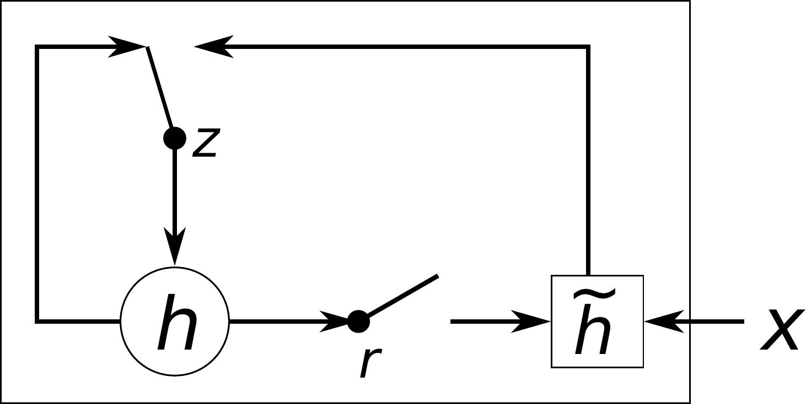
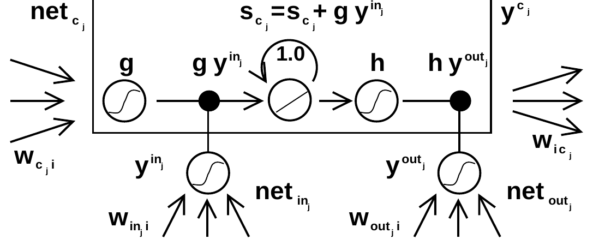

On this page
We all know what feedforward networks are. They assume a fixed-size input. It takes an input, multiplies it with some weights, and applies non-linearities (functions that bend their input instead of just scaling it in a straight line, which is what lets a network learn curved and complicated patterns). The order of the input doesn't matter. This is a problem for input sequences, like words in a sentence, stock prices over days, or audio samples, where order actually matters. Different sentences can have different lengths, which would require padding, adding dummy steps to the short sequences so every sequence reaches the same length, or truncating. A feedforward network flattens the whole sequence into one fixed-size input, and the temporal structure, which step came when, is lost.
With recurrence, instead of processing all input at once, you process one input at a time and carry forward some memory.
The current hidden state depends on the previous hidden state. That is what gives it memory: at each step the cell mixes today's input with yesterday's memory, squashes the mix, and carries it forward.
today's memory is a squashed mix of today's input and yesterday's memory. What today shouts and what still echoes from yesterday are added together, and a squashing function squeezes the total into the range from minus one to one. That squeeze is the whole tragedy of the vanilla RNN: it keeps the numbers sane, and it slowly erases the past. One more matrix turns the hidden state into the output prediction. Here is that update as dataflow:
Mix and squash, mix and squash: every step fades the past a little, and that washout is exactly what the gates were invented to stop.
One RNN step, in one line:
The equation's W is the W in the dataflow figure's × W box (it multiplies xt), and the equation's U is the U in the figure's × U box (it multiplies ht-1). A small bias (a learned offset, one per neuron, added so the result can shift even when the inputs are zero) joins the mix, and one more matrix turns the hidden state into the output prediction; neither appears in this equation line.
Each hand-off fades the past; by the third cell the first word is barely there. The hand-off arrow carries ht to the next cell. Fading shows repeated squashing erasing early content.
xt the word enteringht-1 memory from the last cellht the new cell stateW, U the learned weights; tanh the squasher· times: scalingWhat this shows
Unlike backpropagation, where gradients flow backward through the network and nudge each weight by how much it contributed to the error, flowing layer by layer, in an RNN we have time as well as depth. This is called backpropagation through time (BPTT).
Say the loss is cross-entropy (the standard loss for picking the right class, which grows when the model gives the correct answer little probability), summed over all timesteps.
When we unroll the RNN for T timesteps, it looks like a deep forward network of depth T, where each layer reuses the same weights (the input, recurrent, and output weight matrices). During backprop, gradients flow through the sequence of hidden states. Since parameters are shared, their gradients accumulate across timesteps.
The trouble comes from the recurrent connection. Since each hidden state depends on the previous one, this expands into a long chain rule across time: the chain rule is the rule that a gradient through nested steps is the product of the per step derivatives, so the gradient picks up one multiplication at every timestep.
tanh derivative, which is at most 1. Multiply a number below 1 by itself T times and it collapses: after a few dozen steps the signal arriving from step T back at step 1 is a whisper. I think of it as shouting down a long hallway where every door eats half the sound. The model simply never learns dependencies longer than that hallway.
The gradient magnitude after t steps is w raised to the power t, and after all T steps it is w raised to the power T. Weight scale w: sets the multiplier per step, 0.50 to 1.50. Timesteps T: sets how far back the dot goes, 1 to 50. T is the number of timesteps, and multiply a number below 1 by itself T times and it collapses. A magnitude above 1e2 (100) counts as exploded, a magnitude below 1e-2 (0.01) counts as vanished, and the range between the two counts as safe.
This is the simplified scalar picture. Real Jacobians (each a matrix of partial derivatives, where a partial derivative measures how much one output nudges when a single input nudges and the rest stay fixed) are matrices, not one number, but the exponential dependence on T is the whole story.
The exploded end has a standard fix, taught in full in the clipping section that follows this tool.
Multiply by slightly-less-than-1 at every step for the default 28 steps and only about a twentieth is left for the first timestep to learn from; that is why the gates exist.
How to play
1 vanishes it, and a multiplier above 1 explodes it.1 to 50. With the weight scale at 0.90, raising T lands the dot deeper in the vanished zone.0.50 to 1.50. Pushing it past 1.00 flips the curve from diving into the vanished band to climbing into the exploded band.You can deal with exploding gradients using gradient clipping. Measure the length of the whole gradient vector, all the parameter gradients flattened into one big vector. If that length is bigger than a threshold, scale every component down proportionally until the length lands exactly on that threshold. Same direction, sane size: a step that wanted to be enormous becomes a step you can actually take.
Now, the main issue with RNNs was really vanishing gradients, which affects long-term memory. The old memory gets mixed in and there's no control over how information passes to the future; the information washes out. The RNN forgets context.
The GRU introduces gates to control what information to keep and what to forget.
For example, consider "Ramin wrote the best tutorial, he did it again!". A vanilla RNN might overwrite "Ramin" and forget who "he" was. A GRU's update gate would say "don't overwrite Ramin, hold on to that memory." If the update gate decides to just keep the old memory, the hidden state can flow unchanged for many steps. That means gradients can also flow back easily, solving the vanishing gradients problem.
Conceptually, the hidden state update is a blend of the old memory and the new candidate,
steered by the update gate. If the gate is closed, the memory is copied directly
from one step to the next. No multiplication, no tanh, just an identity
connection. During backprop, the gradients flow through this same path, unchanged.
This is a shortcut path or linear highway for memory.
There are 2 gates, both are little feedforward networks with a sigmoid activation, so their outputs are between 0 and 1.
0 and 1, interpreted as a switch. 0 means keep old memory, 1 means overwrite with new memory.
Finally, one more matrix turns the hidden state into the output prediction.
The update gate asks: of the past, how much do I throw away? The reset gate asks: when I imagine new candidate memory, how much of the past do I let into the room? The candidate is the proposal, and the blend closes the deal. It is a weighted average: fully closed keeps everything, fully open replaces everything, and the network learns the gate setting from data, per step, per neuron. Here is that blend as dataflow:
The GRU in four lines: two gates decide what to keep and what to forget, a candidate memory is proposed, and the update gate blends old and new. Where the equations below use the odot symbol, ⊙, read it as element-wise multiplication, multiplying matching entries one by one rather than mixing entries together.
In the GRUCell code in “One GRU step, in code”, each line here is one line there: the two sigmoid lines build zt and rt (the comments name them update gate and reset gate), the tanh line builds the candidate, and the last line is the blend.
The whole cell is just those four equations. Here it is, one step:
import torch
import torch.nn as nn
class GRUCell(nn.Module):
def __init__(self, input_dim, hidden_dim):
super().__init__()
self.W_z = nn.Linear(input_dim, hidden_dim)
self.U_z = nn.Linear(hidden_dim, hidden_dim, bias=False)
self.W_r = nn.Linear(input_dim, hidden_dim)
self.U_r = nn.Linear(hidden_dim, hidden_dim, bias=False)
self.W_h = nn.Linear(input_dim, hidden_dim)
self.U_h = nn.Linear(hidden_dim, hidden_dim, bias=False)
def forward(self, x_t, h_prev):
z_t = torch.sigmoid(self.W_z(x_t) + self.U_z(h_prev)) # update gate
r_t = torch.sigmoid(self.W_r(x_t) + self.U_r(h_prev)) # reset gate
h_tilde = torch.tanh(self.W_h(x_t) + self.U_h(r_t * h_prev)) # candidate
h_t = (1 - z_t) * h_prev + z_t * h_tilde # the blend
return h_t
Even though the GRU doesn't have a dedicated cell state (a separate memory stream that runs alongside the hidden state rather than being the hidden state itself), it can still preserve long-term memory because the update gate can create identity connections across time steps.
This is the paper that introduced the GRU (Cho et al., EMNLP 2014). Below is its real Figure 2, the hidden-unit diagram, with its original caption.

z selects whether the hidden state is to be updated with a new hidden state h̃. The reset gate r decides whether the previous hidden state is ignored. See Eqs. (5)-(8) for the detailed equations of r, z, h and h̃. Figure 2 of Cho et al. (EMNLP 2014). arXiv:1406.1078
One quirk worth knowing: the paper writes the blend exactly the way this page does, with (1 minus z) weighting the old state and z weighting the new candidate, so fully open replaces the old memory. The flipped form, z weighting the old state, is the later library convention (PyTorch's GRU uses it). Same idea, mirrored knob. If a library's z feels backwards next to the paper, that is why.
Shut: the vault
The update gate is shut: the old memory flows straight through and the candidate is pinched off, so the memory survives unchanged.
Open: the reflex
The update gate is wide open: the candidate floods through and overwrites the old memory.
Halfway: the blend
The update gate sits halfway: both streams feed the output, part old memory and part new candidate.
The reset gate's job
reset gate open
reset gate shut
The reset gate pinches the old-memory branch feeding the candidate mixer: starved of the past, the candidate thins out.
The weights are set aside here, so the two gates are the only moving parts. A real GRU learns the weight matrices too.
zt the update gatert the reset gateht-1 the old memory; ht the new memoryh̃t the candidate memoryxt the inputbz the update gate's bias, learned with the weightsbr the reset gate's biasbh the candidate's biasσ the gate squasher: outputs 0 to 1; W, U the learned weights⊙ element-wise mixtanh squashes to between -1 and 1· times: scalingWhat this shows
LSTM (Long Short-Term Memory) separates memory into two parts and uses three gates to carefully control what flows into, out of, and stays within these memories.
The LSTM keeps two books instead of one. The cell state is the long ledger: it runs straight through the cell with no nonlinearity squashing it, so information (and, during backprop, gradients) can ride it across hundreds of steps almost untouched. That unbroken line is the entire trick. The hidden state is the note I hand you right now: the short-term read, what the network is thinking at this step, built from the ledger but filtered for immediate use.
Three gates guard the ledger, and each one is a question the network asks every step:
The new long-term memory is formed by keeping some of the old memory and adding some new information.
The forget gate decides what fraction of yesterday's balance survives; the input gate decides how much of today's deposit, the candidate, gets added. Notice what is missing: there is no squashing nonlinearity on this line. The cell state is only ever scaled and added, never squashed, which is why gradients walk straight back down the highway instead of vanishing.
The short-term working memory is a filtered view of the long-term memory: the output gate decides how much of the (squashed) balance to show the world right now. Each gate is a mix of the input and the previous hidden state, passed through a sigmoid function. Here is the ledger as dataflow:
The LSTM in six lines: three gates guard a cell state: forget the stale, add the fresh, and output a filtered read.
These six lines are the gates' doing alone, with the weights set aside. A real LSTM learns the candidate through its own weight matrices.
The input pours in
input gate shut
input gate open
The input gate is open: drops pour into the tank and the level rises.
Sealed: the vault
The tank is sealed: nothing drains out, so the level never drops, step after step. That flat line is the whole trick.
The drain: the level falls
The gate keeps nothing, so the tank drains: the level falls and keeps falling. Erasure is permanent.
The output reveals
output gate shut
output gate open
The output gate opens its shutter: the hidden state flows out, as much as the shutter lets through.
Everything you see is the gates' doing alone. A real LSTM learns the candidate through its own weight matrices.
ft the forget gateit the input gateot the output gateCt the cell state (Ct-1 is its previous value)ht the outputht-1 the hidden state from the previous stepC̃t the candidate cell statext the inputbf the forget gate's biasbi the input gate's biasbc the candidate's biasbo the output gate's bias⊙ element-wise mixW, U the learned weightsσ squashes to between 0 and 1, the gatekeeper; tanh squashes to between -1 and 1; · times: scalingWhat this shows
The forget gate stays open (nothing leaks out), so the write gate does all the routing alone. That gate is the LSTM's input gate. A real network learns both schedules from data.
The setup: six gated pipes pouring into a memory tank; the important signal and the loud distractor streams compete, alongside quiet steps. Gating is a routing policy you choose. Open the valve on the important signal, close it on the loud distractor, and the tank remembers exactly what you let in.
At rest: the tank starts empty with the verdict pending. The three presets are Remember everything, Block the distractor, and Amnesia. Remember everything opens all six valves (verdict: remembers the distractor); Block the distractor opens every valve except the distractor's (verdict flips to the important signal); Amnesia closes all six (the network remembers nothing).
With all gates open the loudest input wins.
How to play
This is the paper that started all of this (Hochreiter and Schmidhuber, 1997): a memory cell with a self-loop of weight exactly 1.0, so the error can cycle forever without shrinking, plus gates that open and close access to it. Below is its real Figure 1, the memory-cell architecture, with its original caption.

cj (the box) and its gate units inj, outj. The self-recurrent connection (with weight 1.0) indicates feedback with a delay of 1 time step. It builds the basis of the "constant error carrousel" CEC. The gate units open and close access to CEC. See text and appendix A.1 for details. Figure 1 of Hochreiter and Schmidhuber (Neural Computation 1997). doi:10.1162/neco.1997.9.8.1735Spot what is missing: there is no forget gate in this figure. The 1997 LSTM had only input and output gates; the forget gate arrived three years later, from Gers et al. ("Learning to Forget," 2000). The LSTM on this page is the post-2000 version.
One spike feeds a plain RNN, a GRU, and an LSTM. The RNN's echo decays to flat, the gated lanes hold it, and holding costs 3x to 4x the compute. The RNN trace flattens by the last step while the gated traces stay up.
In practice you never write these cells by hand. PyTorch has them built in, and the call is boring in the best way:
# A 2-layer LSTM; batch_first matches the (batch, seq, features) convention
lstm = nn.LSTM(input_size=28, hidden_size=128, num_layers=2, batch_first=True)
output, (hn, cn) = lstm(x) # output: every step of the last layer; hn, cn: final states per layer
# GRU is the same minus the cell state: output, hn = gru(x)
So what does gating actually buy you? The classic stress test is sequential MNIST: feed a 28x28 digit in one row at a time, so the model must remember early rows for 28 steps before it gets to classify. Here is how the three architectures compare:
| Model | Test accuracy | Notes |
|---|---|---|
| Vanilla RNN | ~95% | Works, but the long gap between early rows and the label hurts it |
| GRU | ~98% | The update gate holds early rows in memory across all 28 steps |
| LSTM | ~98% | Same story; the cell-state highway carries the rows straight through |
Honestly labeled: these are reference values typical of published sequential-MNIST runs with this setup, not measured on this machine. The ordering is the point and it is robust: once the sequence gets long, the vanilla RNN falls behind and the gated models do not.
GRUs typically achieve similar results to LSTMs with fewer parameters: no separate cell state, two gates instead of three. If you are not sure which to pick, start with a GRU.
Illustrative fixed weights, scalar state (a single number, not a vector), both starting at zero. The GRU hold is input-dependent: feed a different spike and it holds a different value. Costs are relative and schematic (gate-count framing), not measured.
How to play
3x to 4x the compute.1.0 is a common starting point.Gating fixed the memory problem, but RNNs still read one step at a time, which makes training slow on long sequences. The next idea drops recurrence entirely: let every position look directly at every other position. That is Transformers.